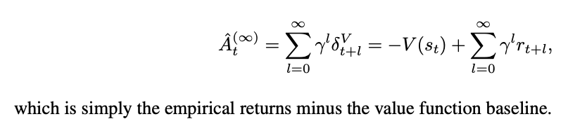
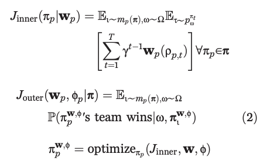

Deep RL
Table of Contents
- Deep RL Notes
- Papers
- Playing Atari with Deep Reinforcement Learning (DQN)
- Asynchronous Methods for Deep Reinforcement Learning (A3C)
- Rainbow: Combining Improvements in Deep Reinforcement Learning
- Continuous Control with Deep Reinforcement Learning (DDPG)
- Soft Actor-Critic: Off-Policy Maximum Entropy Deep Reinforcement Learning with a Stochastic Actor (SAC)
- High-Dimensional Continuous Control Using Generalized Advantage Estimation (GAE)
- Proximal Policy Optimization Algorithms (PPO)
- Interpolated Policy Gradient: Merging On-Policy and Off-Policy Gradient Estimation for Deep Reinforcement Learning (IPG)
- Dota 2 with Large Scale Deep Reinforcement Learning (OpenAI Five)
- Grandmaster level in StarCraft II using multi-agent reinforcement learning (AlphaStar)
- Learning Dextrous In-Hand Manipulation
- Emergent Tool Use From Multi-Agent Autocurricula (Hide and Seek)
- Human-Level performance in 3D multiplayer games with population-based reinforcement learning (CTF)
- Successor Features for Transfer in Reinforcement Learning
- Policy Manifold Search for Improving Diversity-based Neuroevolution
- Code
- Papers
Deep RL Notes
I have managed to complete Sutton and Barto's Reinforcement Learning. I would like to now learn enough deep reinforcement learning to do some useful, novel things with it.
A natural extension step here is OpenAI's Spinning Up in Deep Reinforcement Learning from 2020. This is mostly review for me except for the important subsection Key Papers in Deep RL which contains roughly 100 papers in deep RL. Likewise, there's a nice library called CleanRL which contains single-file, minimal implementations of popular deep RL algorithms for pedagogy.
This page is going to contain two things. It will contain notes on code, and notes on papers. These won't necessarily be from the 100 papers in spinning up / from cleanRL, but a lot of them will be. I'll be reading these with varying level of depth spent on each paper, so I will try to note how closely I've read each paper.
I'm going to try to read at least a couple papers each day in deep RL.
Papers
Playing Atari with Deep Reinforcement Learning (DQN)
Original DQN paper from 2013, very short (there's a longer Nature version which was released later)
Notable about this paper is the fact that all the games are deterministic, so they can formalize an MDP by having the state be the complete list of observations+actions starting from the starting state. I think this is kind of silly, since there are sure to be duplicate states this way, and it throws away most of the point of the markov property, but I guess to theoretically justify making it work for RL it's fine, it's mostly just for completeness.

Basically, generate a bunch of episodes and store memories of all your states, and rather than updating your single episode just update on a random minibatch drawn from the states in your dataset.
The claim here is that nonlinear function-approximation Q-learning is likely to diverge because of correlations between consecutive states, and that doing random updates on the last N states is likely to smooth this out and make it work again. In a sense the "Actual Contribution" of this paper is Experience Replay, the rest is just engineering details like using a CNN to understand the frame / using frame skip to make episodes shorter / doing mostly standard Q learning.
Asynchronous Methods for Deep Reinforcement Learning (A3C)
found here, from 2016.
The core insight in this paper seems to be this idea of replacing experience replay with multi-threaded episodes running in parallel. This means that the updates are sort of pseudorandom still, since it's likely that multiple agents running async will be in different spots of the environment at any given time.
The main advantage of doing this is that now we can stablize on-policy methods! Since before off-policy was the only type that would work with experience replay, and without experience replay it was unlikely to be stable with deep methods. The asynchrony is sort of like a faux experience replay since you get updates all over the state space from the multiple runs, but you get to stay on-policy.
The asynchronous advantage actor-critic (A3C) algorithm in this paper maintains a policy and a value estimation function (as is done in actor-critic), and updates based on \(\nabla_{\theta^{'}} log \pi(a_t|s_t, \theta') A(s_t, a_t; \theta, \theta_v)\) where A is the advantage function \(A(s_t, a_t; \theta, \theta_v) = \sum_{i=0}^{k-1}\gamma^i r_{t+i} + \gamma^kV(s_{t+k}; \theta_v) - V(s_t; \theta_v)\).
Running this does much better than DQN on atari, ~6x better and ~20x faster to reach DQN performance.
Rainbow: Combining Improvements in Deep Reinforcement Learning
Paper here. Basically, there's lots of DQN-compatible algorithms, and most of them are not actually mutually exclusive, so if you just do all of them combined then you get the best results. This is a really nice paper because it directly provides high level summaries of all the stuff between DQN and this paper.
There are six primary extensions to DQN which are included in Rainbow.
- Double Q Learning: to deal with DQN's tendency to overestimate action values, you separate action selection and action evaluation into two separate Q networks, and you estimate \((R_{t+1} + \gamma_{t+1}q_{\bar{\theta}}(S_{t+1}, argmax_{a'}q_\theta(S_{t+1}, a')) - q_\theta(S_t A_t))^2\). It's sort of like actor critic, but instead of a policy and a Q value critic of that policy, it uses a Q value actor and a Q value critic which eventually converge to the same function.
- Prioritized Replay: sampling uniformly from the replay buffer is worse than sampling based on how wrong we were; we want to spend more cycles on samples which were estimated very incorrectly compared to ones that were pretty much perfect. To do this we keep track of the last encountered absolute TD error and sample a distribution based on that.
- Dueling Networks: You use two computation streams, one for value and one for advantage. You can estimate the Q values this way, since Q(s,a) is just \(V(s) + (A(s,a) - \frac{1}{n} (\sum_{x ~ a} A(s, x)))\) where n is the number of actions. Basically this decouples learning the effects of each action of the state, you can think of this like an inductive bias where if the actions don't matter much we can just learn the value instead rather than struggle to learn roughly equivalent action-values for every action in the state.
- Multi-Step Learning: just using forward-view n-step methods, see sutton.
- Distributional RL: Instead of approximating the expected return, we instead try to approximate the distribution of returns. To do this we can create a vector z which creates bins that the value function can fall into, such that we can recover the expected return by summing the element-wise product of z and the values of each bin. Then when we get a reward, we project it onto these atoms (e.g. we see how close it is to one of our existing bins) and do the bellman update for each atom proportionally. To train this we minimize the KL divergence between our distribution and the target distribution, which gives us more resolution beyond just the single value of the expected return.
- Noisy Nets: You replace a simple linear layer with this monstrosity: \(y = (b + Wx) + (b_{noisy} \odot \epsilon^b + (W_{noisy} \odot \epsilon^w)x)\). The idea here is that eventually this learns to ignore the noise term, but it does so at different rates for different states, so this allows a sort of self-directed state-dependent exploration control rather than something global like epsilon-greedy. This helps for stuff like Montezuma's Revenge, because with epsilon-greedy it takes an extremely long time to see any reward, but with this it will be a little more directed.
Rainbow, essentially, is just all of these things mixed together. It's it's an n-step, double Q-learning dueling network with a noisy bias term, which uses distributional reward modeling. The notation is pretty gnarly as a result, since there are so many things, but essentially it's just all of the above things smashed together.
They run this on Atari 2600 games and it does better than anything else by itself. The ablations are kind of interesting too, since they let us see which of the above are most important and which are kind of just window dressing – the most important improvements are multi-step learning and prioritized replay. Second tier is distribtional RL, third tier is noisy term, everything else is pretty slight / no effect on average / mostly game-specific improvement deltas.
Continuous Control with Deep Reinforcement Learning (DDPG)
A notable limitation with DQN is low-dim and discrete action spaces – it will fail if either of those is changed.
This paper introduces Deep Deterministic Policy Gradient (DDPG) which adds the experience replay / target network stuff from DQN (along with batch norm) to DPG. It also introduced the "soft update" for the target network, which updates the weights via exponential moving average rather than all at once.

The core thing here is using actor-critic to extend DQN to continuous action spaces. The DQN algorithm relies on being able to calculate \(\gamma max_a Q(S_{t+1}, a)\) which cannot be performed if there are an infinite number of actions available. However, the actor-critic formulation takes care of both of these, so it's a fairly natural extension.
They show it working well on a bunch of mujoco environments.
Soft Actor-Critic: Off-Policy Maximum Entropy Deep Reinforcement Learning with a Stochastic Actor (SAC)
Paper here. My understanding is that this is currently roughly the most popular off-policy method. The basic idea is that the actor has a joint objective: maximize expected reward, and maximize entropy; i.e. maximize the reward while acting as randomly as possible. This has two advantages: A) it is strong, B) it is more stable than other methods.
This has a similar effect to the noisy nets work; the network is incentivized to explore as widely as possible, but also to give up on unpromising avenues (since the subsequent reward will be low). Likewise, if multiple options are roughly the same, it will weigh them all roughly the same rather than picking one which narrowly eclipses the other.
They derive a soft version of policy iteration (i.e. a soft policy evaluation + a soft policy improvement, repeated) (Details are maybe a bit beyond me here for now, need to revisit this). The Soft Actor-Critic algorithm basically does actor-critic with a target network + a separate state value model for added stability.
It's a bit involved since we're optimizing four different sets of parameters, but at its core it's actor-critic with a separate additional reward for more evenly diffused probabilities, resulting in a stochastic actor. They show this working well on a very difficult, high-dimensional continuous action space task (humanoid control) and show that it's very stable across a lot of different hyperparameters.
High-Dimensional Continuous Control Using Generalized Advantage Estimation (GAE)
Paper here, from 2015. Two paragraph abstract is kind of a fun curiosity.
This paper is like TD(λ) for policy gradient / online actor-critic methods. The goal is to reduce variance without adding too much bias, since the high variance prevents previously existing policy gradient methods from learning hard tasks, and high bias is what prevents these methods from converging in the first place.
The primary contribution of this paper is laying out the Generalized Advantage Estimator, which is an advantage function which is discounted (\(\gamma\)) and also uses an eligibility trace (\(\lambda\)). The derivation is the same telescoping sum of \(\delta\) trick that we had to do like 200 times in Sutton and Barto, so it should be easy to get through for those among us who fought through the exercises.

that is, it's pretty much Exercise 12.3 in Sutton and Barto, but instead of using the value function (as in TD(λ)), it uses the advantage function (\(Q(s_t, a_t) - V(s_t)\)).
Lots of theory in this paper which are mostly theoretical fun facts. We can interpret λ in the above as a discounted reward shaping applied to the MDP. Setting λ = 0 has lower variance but introduces bias, λ = 1 has no bias but high variance. As a result, moving it around can be thought of as navigating a bias-variance tradeoff.
Estimating the value function here is treated like a regular regression problem, and solved with a "trust region method" where they minimize \(\sum_{n=1}^{N}||V_\phi(s_n) - \hat{V}_n||^2\) subject to \(\frac{1}{N} \sum_{n=1}^{N} \frac{||V_\phi(s_n) - \hat{V}_n||^2}{2\sigma^2} \leq \epsilon\). (i.e. average KL divergence between values functions is less than epsilon).
They applied this variant of advantage function to Trust Region Policy Optimization (TRPO) on various tasks and found that it made them much more useful for more difficult control tasks (e.g. quadrupedal walking).
Proximal Policy Optimization Algorithms (PPO)
Paper here. You could call this, vaguely, sota for deep RL algorithms; it's what was used for stuff like OpenAI Five, it's extremely powerful.
The actual PPO algorithm is super simple:
The important things here are the surrograte objective and the advantage estimates. For the former, the one that matters most is the clipped surrogate objective, which takes the following form:
\(L^{CLIP}(\theta) = \hat{\mathbb{E}}_t [min(r_t(\theta)\hat{A}_t, clip(r_t, 1-\epsilon, 1+\epsilon) \hat{A}_t)]\)
Where \(r_t\) is the probability ratio \(\frac{\pi_\theta(a_t | s_t)}{\pi_{\theta_{old}}(a_t | s_t)}\).
The first term of this clipped objective is the same objective as Trust Region Policy Optimization. The intuition behind this that we have a metric for how much better or worse than expected our action was (the advantage). We also have the old and new policy, and we can measure how much more or less likely either policy was to take that action. In short, if the action was better than expected, we want our new policy to take that action more than the old policy. If the action was worse than expected, we want our old policy to have taken that action more frequently than the new policy. In effect, maximizing this objective means that we directly try to make advantageous actions more likely under the new policy.
The second part of this clips the value of the probability ratio to be bounded within a specific range. The intuition behind this is that if we optimize the TRPO objective directly, we will want to make a huge update whenever there's a large advantage. But sometimes you'll just get that by chance, for example if the environment is stochastic. What we really want is to make steady changes to the policy to maximize the objective, and hope that through experience we can continue to improve it.
Then we take the minimum of this applied to the advantage function. The probability ratio is going to be positive (it's a ratio of probabilities), so basically this will clip the ratio to 1+ε if the advantage is positive, and clip the ratio to 1-ε if the advantage is negative. This lets us constrain to smaller updates, so that if we want to make big changes, we need to do it over multiple iterations through multiple experiences, rather than all at once (which could be unstable)
The other big component of this is the advantage estimates. This is done via a truncated Generalized Advantage Estimation (GAE), specifically:
\(\hat{A}_t = \delta_t + (\gamma\lambda)\delta_{t+1} + ... + (\gamma\lambda)^{T-t+1}\delta_{T-1}\)
Where \(\delta_t = r_t + \gamma V(s_{t+1}) - V(s_t)\)
Since it's an actor-critic method, we have the policy (actor) which makes all the moves, optimized via the surrogate objective, and we have a value model (critic) which is just trained to predict returns from each state (and therefore minimize \((V_\theta(s_t) - V_{target})^2\). In their case they put this all in one network with two heads, and use a combined loss function which optimizes both of these tasks at once.
Compared to other deep RL algorithms like DQN, A3C, DDPG, etc; PPO is a lot more engineerish. It's extremely simple algorithmically, and doesn't use anything like replay buffers, optimization constraints, replay buffers. It works on continuous and discrete action spaces, it's easy to work in with other networks, and it works super well. But, in exchange, it's on-policy, and the clipping is just something that seems to work rather than something with more concrete theoretical guarantees.
There are some other objectives explored in the paper here but the clipped one is the one which has remained the most important to my knowledge. As mentioned, this method solves DoTA, so you don't need too many other bells and whistles beyond this.
Interpolated Policy Gradient: Merging On-Policy and Off-Policy Gradient Estimation for Deep Reinforcement Learning (IPG)
Paper is here. The on-policy and off-policy distinction can be bridged, it's possible for methods to leverage both ideas.
There are two ways these two have been bridged prior: by training an off-policy Q critic (Q-prop), and by mixing on- and off-policy gradient updates according to some ratio. IPG does both of these things. Actor-critic in general can be off-policy in principle, but usually isn't because doing so tends to be less stable. For example, Q-Prop uses an off-policy critic, which leverages the first order taylor expansion of the Q critic to obtain "control variates" to reduce variance.
Specifically, for Q-prop we have the following:
Where the gradient estimator is essentially just the addition of the standard likelihood raio policy gradient objective (here \(\hat{Q}(s_t, a_t) - b(s_t)\) uses \(\tilde{Q}_w(s_t, a_t)\) as b, it's just the chosen advantage function), with the addition of the off policy deterministic policy gradient of the taylor expansion \(Q_w(s_t, a_t)\). This does clearly combine off policy and on policy methods together, but they're kind of cleaved apart between the terms (i.e. there's an off policy term and an on policy term).
The core contribution in this paper is the notion of interpolating these two terms. That is:
Which you'll recognize as the same as the previous objective but with weighted interpolation terms and using just the mean Q value in the state rather than the first order taylor expansion given st and at. We can introduce control variates by replacing \(\hat{A}(s_t, a_t)\) with \((\hat{A}(s_t, a_t) - A_w^\pi(s_t, a_t))\), where the latter is the advantage derived from the off-policy estimate and the former is the advantage derived by the on-policy estimate. This means that this new term (the "residual likelihood ratio gradient") will move up or down based on how aligned the on and off policy estimations are. If the off-policy estimate is accurate, then the left term will go towards 0 and it will be more off-policy-ish. If it's not accurate, it will go up and be more on-policy-ish, which means the overall effect is that it has less variance.
With this framing you can recover lots of the other methods in entirety using special hyperparameter values. For example, setting v to 0 gives you vanilla policy gradient. Setting it to 1 gives you DDPG. So on and so forth. This serves as sort of a unifying framing where you can cleanly interpolate between on- and off-policy methods rather than limiting yourself to the extremes of this tradeoff. Consider the analogy of n-step methods bridging TD learning and MC methods, it's sort of like that but for policy gradient.

Shown on a variety of benchmarks, this seems to improve sample efficiency, in addition to just serving as a unifying framing for the existing methods. Probably important takeaway is: on-policy and off-policy distinction is not a hard boundary, and it's possible to use methods which are both in varying degrees.
Dota 2 with Large Scale Deep Reinforcement Learning (OpenAI Five)
Paper here. OpenAI defeats world champion DoTA 2 team using a deep RL system trained via PPO.
The majority of this paper deals with the necessary architectural challenges present when scaling to a system large enough to solve such a difficult task. The actual training component is relatively straightforward, but training for months on 1000+ GPUs for a game which recieves patches and pulls the environment out from underneath you introduces significant challenges compared to something simple which can be run on a single machine.
They train this such that each hero uses the same network, and the actor-critic component is handled by two heads of the same network (compare to the CleanRL PPO cartpole implementation which uses two separate networks). The LSTM layer is the big thing, it's ~84% of the parameters. Also note that this system is not from pixels – they use an encoder function which maps game state protobufs to a set of observations which are deemed fair for the agent to observe (I don't play DoTA so I don't have too much of an opinion on which observations are fair or not, maybe something to revisit later).

The system design here uses four primary types of machines: controller machines which hold and distribute new parameters after optimization updates, forward pass GPUs which calculate the actions to be taken, rollout workers which play the game (sending states to forward pass GPUs, applying actions from those GPUs to the environment, and sending samples to the optimizer machines), and optimizer GPUs which take the samples generated by the rollout worker and perform gradient updates.
They used this system for ten months on a single training run, and then it defeated the world champions.
Of interest to me from this paper is the Surgery technique that they describe in Appendix B. They have an experiment in the main body which shows a "rerun" experiment where they use the final hyperparams / environment / architecture / etc and destroy their original performance in just 2 months of training. You might ask what the point of the old way was if you could just do this. The key insight is two main things:
- DoTA 2 is regularly patched, which means the environment changes frequently, which would require completely retraining a model without some sort of trick.
- They can demonstrate success with a scaled down experiment, and then scale that experiment up, rather than hyperparameter searching directly upon a huge and extremely expensive training run – The rerun experiment is sort of like comparing figuring out a rubik's cube vs speedsolving a rubik's cube using a solution you already have, so it's not much of a shock that it performs better than the 10-month training run.
So how does this work? Specifically what they want to do is to handle these two things: changes to the architecture, and changes to the environment. Basically, we want to figure out how to put a policy into a bigger policy's "body" while having it act the same, and we want to show the model new or different things but have it act basically the same if it just ignored the new things.
For the first of these, they show a simple theoretical result where this will work simply by adding new random parameters at the end of the first layer (so there's no symmetry), and adding the same number of zeros to the layers that follow (so those random parameters are ignored at first). This won't work for the LSTM since it's a recurrent network, but they mention in practice they can just use very small random initialization and it works pretty much the same. This works for changing the observation space too: if you pad the weight of the matrix which consumes the observations with new zeroes then \(\hat{\pi}_{\hat{\theta}}(\hat{E}(s)) = \pi_\theta(E(s))\) for all states \(s\), and these just get changed via regular learning in future updates.
For changes to the environment, they show that there's usually some transfer if the observation space doesn't change (i.e. if you do nothing and just change the environment the agent will learn that the changes happened and then adjust accordingly), but they do mention that using annealing of the new environment helped stability. That is, you start with 0% of the new environment, and slowly replace proportions of your samples with ones from the new environment until you land at 100%. They do this so that the model never gets worse in skill due to the environment change, and if they notice the model getting worse during this process they conclude it's because they annealed too fast (and start over with a slower annealing rate).
Notable about surgery is that it never touches the reward (and thereby the behaviors), and it also does not work for removing parts of the model. The architecture change mentioned above only works in one direction, so if you add an observation and later deprecate it, you have to leave it in the network as a vestigial component forever. They mention the Rubik's Cube Hand paper as something which tackles this question, but they just continued to observe useless observations instead of extending surgery techniques to support removals.
Grandmaster level in StarCraft II using multi-agent reinforcement learning (AlphaStar)
Paper here. Using largely the same architecture as OpenAI Five, but with imitation-learning-driven RL instead of entirely self-play, DeepMind trains an agent which gets GM level at StarCraft II. There's a thesis from one of the first authors which goes into more detail here which I haven't read through yet.
Training for this was done in two large phases: first a supervised learning phase, and second a reinforcement learning phase.
The SL model was trained on a big corpus of 971k replays of StarCraft II matches for players with ~top 20% rating. For each action, they compute a distribution of possible outputs that the model can output as actions, and they train to minimize the KL divergence between this distribution and the human distribution. This was then further finetuned with only replays from top players, to encourage the action distribution to more closely match higher skill play.
The RL model was trained second since the action space was so insanely large that it needed a human-centric starting point for action selection. They do actor-critic like in OpenAI Five, but with some slight differences. There are a lot more actions in StarCraft, so the time horizon and action space both pose really big problems.
The value function here was trained with TD(λ), in hopes of handling the longer time horizon. The policy was trained with V-Trace and Upgoing Policy Updates (UPGO). V-Trace comes from the IMPALA paper (need to understand this better later). UPGO I think is an original contribution here. The basic idea here is that if the action taken by the policy was better than the value estimate, you learn from that, but if it's worse than the value estimate, you bootstrap from the value estimate instead. This makes it so that the policy is "always learning from good trajectories and ignoring bad ones".
A core component of starcraft is that there are three races. To be good at starcraft, you need to be good against all the races. This introduces a multi-agent problem which is maybe the most technically interesting component of this paper:
The idea here is that you have three different types of agents: main agents (i.e. the thing we are training), exploiter agents (who only play main agents and thus learn to specifically exploit their weaknesses), and league exploiters (trained similar to main agent, but never have to play exploiters). There is one main agent for each race, and two main exploiter and league exploiter agents for each race, for a total of 15 different types of agents being trained at once.
Why can't they use self-play for this type of thing? Well for one, self-play collapses a bit in these sorts of rock-paper-scissors situations, where they chase in a circle learning strategies which defeat the currently held one. Better to have a population of strategies, and improve at defeating them all. Better yet, they select opponents based on their likely ability to defeat the agent (PFSP), such that almost no games are played between two agents where victory is roughly a sure-thing. The relative balance of PFSP vs normal self-play, how many agents of each type are in the pool, etc are all mentioned in the appendix, giving me the impression that the balance is a bit of an art.
Learning Dextrous In-Hand Manipulation
Paper here.
RL for robotics, uses domain randomization in simulation to transfer simulated experience to the real world. CNN module is responsible for object pose estimation, LSTM module is responsible for control provided the underlying object pose.
Domain Randomization is the big thing about this work, which is sort of standard fare in computer vision / super important for robotics in particular where training on sim -> transferring to the real world is what allows this to happen in a reasonable amount of time without destroying valuable objects or components.
The core thing about this work are:
- create a simulator for the task
- pick lots of things about the simulations to randomize, model noise + mismeasurement expected in real world transfer
- Apply PPO to the problem (i.e. the same as OpenAI Five, using the LSTM)
The critic isn't actually used at inference time so it can leverage information in the simulator that the real world doesn't have. They call this idea Asymmetric Actor-Critic, but it's really just giving the policy network only the observations it will have in the real world. They give it discrete, binned actions and reward it for correct rotations (and punish it for dropping).
It's trained in the same distributed fashion as OpenAI Five.
As mentioned, first they train a policy in the simulator which can solve the task when provided ground truth object position/rotation information (in the simulator), and then they train a vision model which will estimate that information (in the simulator) from pixels when provided 3 camera angles, until it can perform reasonably well. This way they can transfer the policy to the real world without obtaining information other than pixel-based observations.
As you would expect, there's some degradation in the real world performance compared to the sim performance, which makes sense because there's no explicit component of domain adaptation beyond just using domain randomization in training. Another notable problem is that their policy would commonly destroy the robot, and they would have to keep repairing it.
Emergent Tool Use From Multi-Agent Autocurricula (Hide and Seek)

I'm sure you remember this paper, it was very famous and there were lots of cute videos about it. Paper is here. The central idea here is that in multi-agent settings, competing agents will pose some sort of problem to each other, and then solving that problem "passes the ball" to the other agent to, in turn, solve the resulting problem. This iterated back and forth is referred to as autocurricula. The resulting behaviors in this paper (making forts, locking up ramps, box surfing, etc) are clear examples of this.
Yet again, this is trained with PPO. But this time we get to use self-attention too! They train this for 100 million episodes so I'm sure this cost millions of dollars.
There's also some interesting stuff in here about using finetuning as a measure for identifying how strong behaviors are in each policy. For this they have five non-hide-and-seek tasks: counting objects, lock and return, sequential lock, blueprint construction, and shelter construction. Generally, pretraining in hide and seek is more effective than training from scratch or using count-based intrinsic motivation.
Human-Level performance in 3D multiplayer games with population-based reinforcement learning (CTF)
This is a deepmind paper which was published in Science in 2019, where they trained agents to win Capture the Flag in Quake III Arena using only pixels as input. This is meaningfully different from most other environments because it's competitive and multi-agent.
The way they handle the multi-agent problem is to frame the problem as having two tiers: first, they maximize the agent's future discounted internal rewards; second, they maximize the likelihood of winning, as described by the agent's own internal reward scheme.

The inner objective they learn with RL, the outer objective they learn via population-based training. The key here is that instead of using self-play, they get to initialize a population of \(P\) different agents, which introduces some diversity in the training + doesn't allow the agent's to too closely infer what their teammates or opponents would do. These agents are assigned matchmaking ratings and paired together based on skill so the gameplay isn't lopsided.
More specifically, for the inner loop they used n-step actor-critic with off-policy correction and auxiliary tasks, and the architecture they used was a multi-time scale RNN where they had a fast, low frameskip pathway for observation/action generation, and a slow, high frameskip pathway for longer-term temporal dependencies. They have some vector \(w\) for each agent in here which is optimized by the outer loop, which is crossed with the observed points to get that agent's personal rewards.
The outer loop they train 30 agents in parallel, where they would mutate / replace the population based on successful \(w\) vectors and hyperparameters. This outer loop maximizes chances to win, which is a sparse signal; the inner loop is regular(ish) actor-critic training. This is kind of neat because they get diverse agent rewards but they aren't hand-crafted reward functions, the agents get to learn their own reward functions and they just get vaporized if they come up with bad ones.
As in alphastar there's lots of tournament-based framing / evaluation in this work. This is useful especially here since the map for CTF is randomly generated in each game. These things outperformed human teams, suggesting they were likely to be better with random teammates on maps none of the players have seen before. There's also some cool stuff actually looking at the feature maps and trying to extract semantic content about the game from the extracted features (e.g. "do I have the flag" simple classifications from frozen features extracted from the policy).
Successor Features for Transfer in Reinforcement Learning
Found here, from 2018.
This paper studies transfer between tasks in RL contexts.
The formulation here is really elegant. The basic idea is that we can create a model which will calculate expected reward on a task from features, i.e.
\(r(s, a, s') = \phi(s, a, s')^\intercal w\)
where \(\phi(s, a, s')\) describes features, and \(w\) represents weights which produce the reward given the features. This way, instead of writing Q(s,a) as the expected discounted sum of rewards, we can write it as the expected discounted sum of features, multiplied by the weights \(w\).

\(\psi^\pi(s,a)\) here is the expected discounted sum of features, which they call successor features.
How do we compute this? Well, we can use any RL method, since it can just be written as a bellman equation where we substitute \(\phi\) for rewards:
\(\psi^\pi(s,a) = \phi_{t+1} + \gamma E^\pi[\psi^\pi(S_{t+1}, \pi(S_{t+1})) | S_t = s, A_t = a]\)
WHY THIS IS USEFUL: because in cases where we keep everything the same EXCEPT the reward function, we can completely describe the difference between tasks as the difference in \(w\).
WHY THIS IS USEFUL 2: If you have a set of policies \(\pi_i\) and their successor features \(\psi^{\pi_i}\), if you're given a new task \(w_{i+1}\) then you can easily evaluate all the policies just by doing \(\psi^{\pi_i}(s,a)^\intercal w_{n+1}\). You can then do generalized policy improvement to construct a new policy based on the old policies (i.e. taking the best Q values for each) and derive a policy at least as good as the best policy you already have.
There's some additional guarantees here that if the distance between your new task \(w_i\) and the closest old task \(w_j\) is small, that you'll get a bounded error on the new task using this procedure.
Policy Manifold Search for Improving Diversity-based Neuroevolution

Paper here. This paper has an interesting premise: there are often lots of good solutions to a particular problem, but traditional methods usually just tunnel upon a single one. Due to the manifold hypothesis, the authors claim there exists a lower dimensional manifold which contains a high density of different useful policies. So, instead of searching for a policy, they try to learn this manifold, and then search for policies by sampling from it.
They call this PoMS, or Policy Manifold Search. Basically this takes two phases: first, they use an autoencoder to compress a policy to a small latent, and then reconstruct it. Then, they run MAP-Elites to search inside the latent space of the autoencoder in order to find better policies.
An interesting component of this work is the concept of a Behavior Descriptor (BD) which maps the state trajectory to a fixed-dimensional behavior vector. This is a core component of the MAP-Elites algorithm they use, where they try to populate a fixed-size cell grid \(C_\theta\) with the highest performing policies adhering to a particular BD.
That is, we sample policies from the cell grid, we mutate them, we evaluate them, and we add them to the collection if they beat the policy in their grid cell or if they fill a previously empty grid cell. Then we train an autoencoder to reconstruct these models. Each loop we get new policies in the grid, so the autoencoder gets fresh data every loop.
There's some other interesting details in here about mutating in the AE latent space using the jacobian, or sometimes searching in original parameter space, etc. It's an interesting work because A: the implication of a dense manifold of diverse solutions is one with interesting implications, and B: the focus upon multiple solutions to the same problem is one I rarely see considered valuable in other works.
Code
CleanRL dqnatari
code is here. This is a ~200 line implementation of the original DQN experiment, using convolutional nns etc.
learningstarts is an interesting detail here, I suppose to flood the replay buffer before starting to train. This targetmax * (1 - data.dones.flatten()) part is a one-liner which sets the terminal transition states to just be the reward, per algorithm 1 in the paper.
Likewise implementing this using a frozen "target network" and optimizing a separate "q network" is interesting. They seem to update this every 1000 steps or so, but it's a nice trick.

Specifically, they copy this over to the target network using this soft update mechanism where you essentially have the target network chase the current values of the Q network. I think this comes from the DDPG paper in 2016, which from a quick skim-through looks like it is intended to make divergence less likely. I'll give that a closer look when I get to that paper though.
CleanRL PPO
Code is here. This code just is for cartpole.
Core Idea
Critic estimates value (regression problem), Actor selects action (here discrete, but optionally so)
Get T timesteps from each actor (i.e. one actor)
Get advantages

over epochs and minibatches, optimize clipped surrogate objective + simple regression objective for value network.
Implementation Tricks
The layer init using orthogonal initialization + using different std for actor and critic is apparently common practice in PPO
def layer_init(layer, std=np.sqrt(2), bias_const=0.0):
torch.nn.init.orthogonal_(layer.weight, std)
torch.nn.init.constant_(layer.bias, bias_const)
Clipping values, clipping gradients by global norm, and normalizing advantage inside each minibatch are tricks to this not mentioned in the original PPO paper. There's also early stopping if KL divergence gets too high, and learning rate annealing, which seem helpful as well.
There's also this PPO Implementation Deep Dive from the mind behind CleanRL, as well, which walks through some of these implementation details.